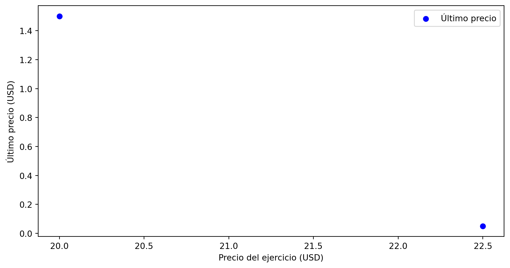

Proyecto Gestión Financiera
Luca Appiani
Antonia Banduc
Gerardo Rozas
14 de noviembre, 2023
Contenidos
Descripción de los activos
Los activos desarrollados en esa ocasión fueron los siguientes.
| Nombre Activo | Ticker |
|---|---|
| Banco de Chile | CHILE.SN |
| Parque Arauco | PARAUCO.SN |
| COPEC | COPEC.SN |
Donde los tickers corresponden a los de la Bolsa de Santiago (Santiago, s. f.).
Banco de Chile
- Uno de los bancos comerciales más grandes del país.
- Ofrece una gran variedad de productos bancarios y servicios financieros.
- Cuentas de ahorro o de inversión.
- Cuyo objetivo de las soluciones financieras es lograr satisfacer las necesidades de los clientes en cualquier etapa de la vida de estos.
Banco de Chile
- En cuanto a la acción de la empresa, se muestran los rendimientos.
| Periodo | Rentabilidad |
|---|---|
| YTD | 14,04% |
| Año anterior | 32,21% |
Parque Arauco
- Empresa inmobiliaria chilena, dedicada principalmente a la edificación y administración de centros comerciales.
- Tiene operaciones en Chile, Perú y Colombia.
- Cuatro formatos de centros comerciales: regionales, de barrio, outlets y strip centers.
Parque Arauco
En Chile, el sector ha estado viviendo un difícil momento. A pesar de esto, Parque Arauco ha anunciado importantes inversiones en Perú y Colombia dentro de este año.
Parque Arauco
- Actualmente, el precio de la acción es de CLP$1.190, y viene de una baja en los últimos meses.
COPEC
En el año 2003, COPEC se transforma en la afiliada encargada del negocio de los combustibles líquidos y lubricantes, y la matriz se transforma en un holding financiero.
- Negocios:
- Energía: Combustibles, Electricidad, Gas licuado y natural.
- Recursos Naturales: Industria forestal, Pesquera y Minera.
COPEC


Otro Activos COPEC
Emisiones de Parque Arauco
Parque Arauco ha emitido acciones en varias ocasiones dentro de su historia.
| N Inscripción | Razón Social | Serie Afecta | Fecha | RUT | N Acciones | Moneda |
|---|---|---|---|---|---|---|
| 1033 | Parque Arauco S.A. | UNICA | 10/02/2016 | 94.627.000-8 | 78.000.000 | PESOS |
| 994 | Parque Arauco SA | UNICA | 07/02/2014 | 94.627 000-8 | 16.000.000 | SINFO |
| 933 | Parque Arauco S.A. | UNICA | 25/07/2011 | 94.627.000-8 | 100.000.000 | PESOS |
Emisiones Parque Arauco
- Se pudo analizar la última emisión (año 2016) con información de un prospecto de la emisión.
- El monto máximo a recaudar era de $78.000.000.000, emitiendo 78.000.000 de acciones.
- Se pudo ver la declaración de registro, con toda la información financiera y administrativa pertinente.
- Se pudo ver el contrato de suscripción, explicando cómo se debían suscribir las acciones en distintos plazos.
Emisiones Parque Arauco
- En general, se pudo ver con un ejemplo concreto el procedimiento de emisión de acciones, la información necesaria, los contratos de suscripción, el procedimiento de colocación, plazos, etc.
Derivados de un activo
- Para Banco de Chile, debido al poco desarrollo en el país, su acción de la Bolsa de Santiago no posee derivados.
- Pero su acción de que transa en el NYSE si tiene derivados relacionados, particularmente opciones.
Derivados de un activo
Modelo alternativo
- Modelo con un enfoque basado en el método de simulación de Monte Carlo (Boyle 1977).
- Se utiliza para valuación de opciones “Europeas’’.
- Dentro de los parámetros necesarios para el modelo está el precio actual de la acción en el tiempo \(t\), que se denota como \(S_{t}\).
Modelo alternativo
- En líneas generales en el proceso ocurre lo siguiente:
- Se generan valores de \(S_{t+m}\), hasta llegar al tiempo \(T\).
- Luego de los experimentos de simulación se calcula el valor esperado de \(\max\left\{S_{T}-E,0\right\}\), donde \(E\) es el precio del ejercicio de la opción.
- Este valor es después descontado a una tasa libre de riesgo \(t\) para calcular una estimación del valor de la opción \(\hat{g}\).
Modelo alternativo
Un detalle importante es que dado que el proceso es una simulación, el resultado se presenta como un intervalo de confianza, con un cierto nivel de confianza.
| Resultado (90% confianza) |
|---|
| (0,067; 0,138) |
Portafolio elegido
Las variables son las siguientes:
- \(\boldsymbol{\mu}\): retornos esperados.
- \(\boldsymbol{w}:\) pesos relativos del portafolio.
- \(\boldsymbol{\Sigma}:\) matriz de covarianza de los activos que componen el portafolio.
- \(\delta\): factor de penalización.
El modelo busca maximizar el ratio de Sharpe. \[ \max_{\boldsymbol{w}} \left\{\boldsymbol{\mu} - \delta \boldsymbol{w}^{\intercal}\boldsymbol{\Sigma}\boldsymbol{w}\right\} \] Sujeto a:
\[\begin{align} \sum_{i}&w_{i}=1\\ 0\leq &w_{i}\leq 1 \end{align}\]Resultados del portafolio:
| Acción | Pesos |
|---|---|
| Banco de Chile | 68.3% |
| Parque Arauco | 10.3% |
| COPEC | 21.4% |
El rendimiento esperado de este portafolio era de un 1,113%. El rendimiento que se obtuvo fue de 1,332%.
Conclusiones
- Importancia de la relación de las variables de contexto con el rendimiento de una empresa y el precio de su acción.
- Poco desarrollo del mercado de derivados en Chile.
- La ausencia de inversiones mantenidas hasta el vencimiento al 31 de diciembre de 2022 y 2021 puede reflejar una estrategia de inversión más orientada hacia la liquidez y la adaptación a las condiciones del mercado.
Aplicación
Se desarrolló una aplicación que entrega el gráfico del precio de la acción con sus volúmenes, y las opciones relacionadas al ticker entregado.
Referencias
Boyle, Phelim P. 1977. «Options: A monte carlo approach». Journal of financial economics 4 (3): 323-38.
Santiago, Bolsa de. s. f. «Bolsa de Santiago». https://www.bolsadesantiago.com/.
Grupo 13